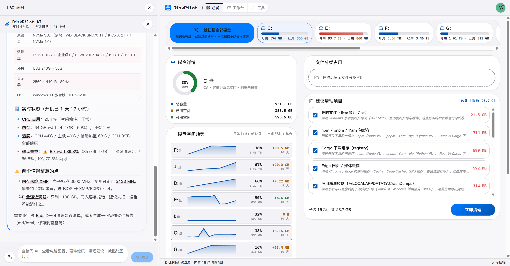
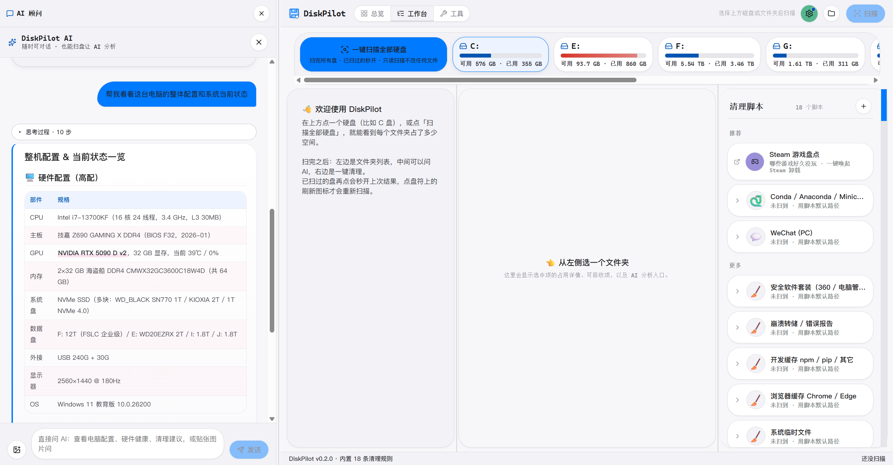
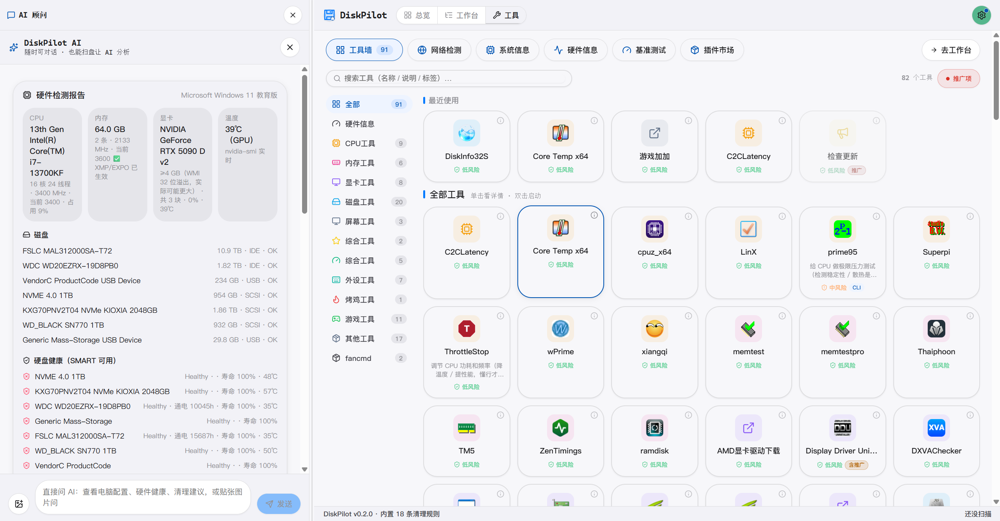

DiskPilot 秒级扫完整盘，把空间去向画成一张图；不认识的文件夹拖给 AI 问一句；确认能删的，一键进回收站、随时撤销。
不是又一个"一键加速"。它先让你看懂，再让你放心动手。
Windows 直读 NTFS MFT，配合 USN 日志增量更新；其他平台自动降级为跨平台遍历。treemap + 树视图双形态，每个目录带占用条。
陌生文件夹拖进聊天框，AI 解释它是什么、能不能删、删了会丢什么。自带 Key（Anthropic / OpenAI / Gemini）或本地 Ollama 零成本。
18 份官方清理脚本覆盖微信、QQ、Steam、浏览器、IDE、Conda、Docker 等，逐项勾选、默认进回收站、操作日志一键撤销。
同一套安全模型之下，长出了一个系统工具箱。
64 个只读（磁盘健康 / SMART / 传感器 / 网络 / 事件日志 / Steam 盘点…）+ 11 个写操作——写操作必须过界面两步确认，AI 绕不过去。
CPU / 内存 / 磁盘 / GPU 基准与压测（温度熔断守门）、全量传感器快照、趋势告警、蓝屏转储分析、系统体检报告。
12 个分类，CLI 白名单执行 + GUI 一键启动，每个工具带风险徽标；四级权限模型，最高危一档永久禁止。
TOML 声明边界 + 安全测试断言"用户数据 0 命中"。没验证过 glob 的脚本一律不收——36 份旧模板就是这么被下架的。
扫描结果、清理历史、撤销日志全在 ~/.diskpilot/；API Key 存本地，请求直发服务商；WiFi 工具绝不读密码。
为"给长辈用"做过小白化：首次免责声明、AI 未配置引导、破坏性操作三件套确认。自动更新开箱即用。
所有删除走系统回收站；可另开 7 天隔离区双保险。
每次删除写入 undo.jsonl（含真实释放字节），"最近清理"面板原地找回。
聊天数据库、收藏、登录态、凭据列入红线清单；scaffold-lint 与装载闸用同一把尺，命中即拒绝。
11 个 MCP 写工具在协议层要求确认参数，两步 UI 确认后才下发。
盘根、系统目录、用户主目录根，代码层面直接拒绝。
以下均为 v0.2.0 真机截图。



免费 · 开源（MIT）· 无广告 · 无遥测 · 内置自动更新。
所有安装包附 .sig 签名；SmartScreen 拦截时点「更多信息 → 仍要运行」。源码与完整文档：github.com/lxfebd/diskpilot